이 소문을 듣고 전설적인 사립탐정 곽씨와 그의 조수 노마는 평내호평으로 향했습니다. 그렇지만 밤낮을 조사해보아도 나오는 건 평범한 상가와 평범한 사람들 뿐…
1. 유적지에서의 출발
보물의 존재이 회의감이 들기 시작할 무렵, 관찰력이 뛰어난 유능한 조수 노마는 공원에서 무언가 수상한 것을 발견합니다.
"탐정님, 그런데 저 공원의 표지판… 뭔가 이상하지 않아요?"
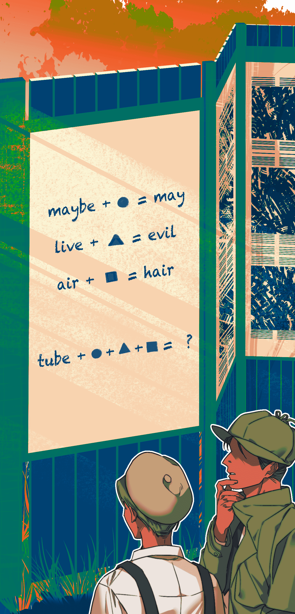
표지판 문제의 답을 입력하여 다음 페이지로 넘어가세요!
1. 유적지에서의 출발
"hut, 움집이라면 바로 이곳이겠군."
"움집 모형이랑, 이건 유인원 조각상인가? 이 곳이 선사시대 유적지라 그런가봐요."
공원을 가로질러 이어진 돌길 옆에는 'hut'이 의미하는 쇠로 된 움집 모형이 서 있습니다. 그 안에는 마치 스도쿠를 닮은 듯한 퍼즐이 그려져 있습니다.
"이건 뭐지? 스도쿠라기엔 칸 수가 너무 적은데..."
"후토시키 퍼즐이군."
"그러고보니, 주변 돌길의 돌 위에도 숫자들이 써져 있구나. 이게 답과 관련이 있는 걸까..."
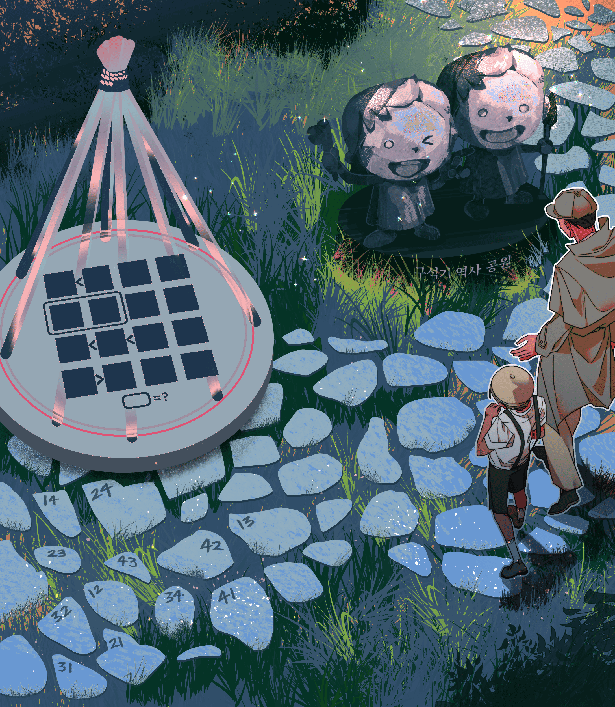
1. 유적지에서의 출발
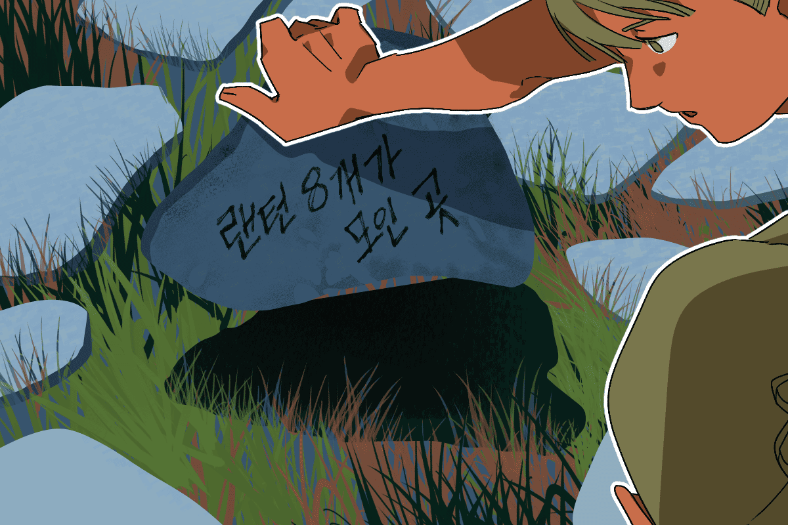
정답인 41이 적힌 돌판을 뒤집자, 그 안에는 글씨가 적혀 있었습니다.
랜턴 8개가 모인 곳...
1. 유적지에서의 출발
"랜턴이 8개가 모여있는 곳은 이 곳뿐이야."
"뭔가 특이한 모양새로 랜턴이 정렬되어 있네요. 묶여있는 실은 무엇을 의미하는 걸까...?"
"잠깐, 이 곳에 잠긴 문이 있어."
기둥 모양을 한 랜턴은 직각삼각형 모양으로 정렬되어 있습니다. 각 변의 랜턴들끼리는 같은 줄로 묶여 있습니다. 랜턴들의 옆쪽 바닥에는 자물쇠로 잠긴 문이 보입니다.
"자물쇠는 5글자의 영단어를 입력할 수 있을 것 같아요."
"이 수상쩍게 생긴 랜턴들이 그 힌트가 되어 줄 거다."
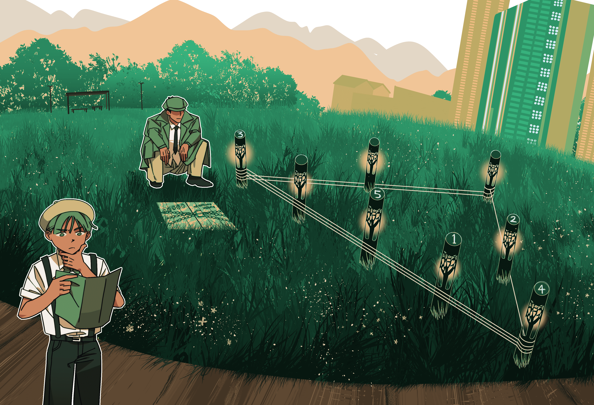
1. 유적지에서의 출발
자물쇠에 'enter'를 입력하자, 굳게 잠긴 문이 열렸습니다. 그 안에는 글씨가 적혀 있습니다.
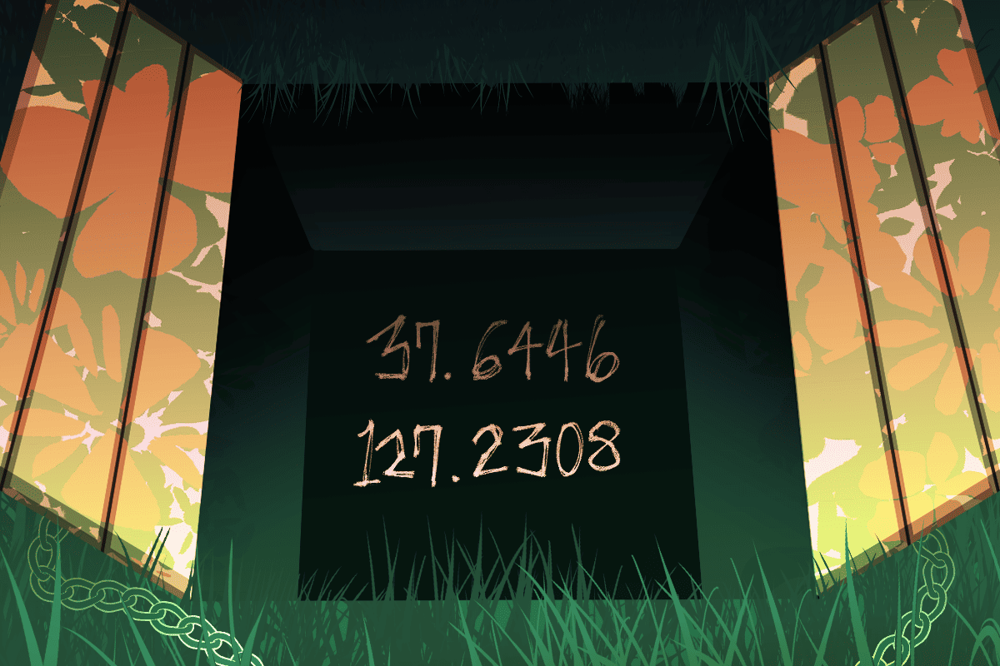
37.6446 127.2308
"흠, 생각했던 것보다 별 게 없는데요."
"......! 노마, 이 숫자는 아무래도 좌표인 것 같다."
"좌표? 그럼 이 곳이 보물의 위치인 건가요?"
"그럴지도 모르지. 일단 이 곳으로 가보자꾸나."
스테이지 1을 클리어하였습니다. 스테이지 2로 이동해주세요!
2. 숨겨진 비밀이 가득한 궁집
"적혀있던 좌표는 바로 이 곳이에요. 궁집이 뭐지?"
"듣기로는 조선시대 영조가 막내딸 화길옹주가 시집갈 때 지어준 집이라는군."
천재 사립탐정 곽씨와 그의 조수 노마는 쪽지의 주소를 따라 궁집에 도착했습니다. 고즈넉한 분위기를 주는 한옥들이 연못과 나무들에 어우러져 즐비해 있습니다. 이 곳에 영조의 막내딸이 살았다고 들으니 새삼스레 경건한 기분이 듭니다.
"그런데 궁집의 안채로 들어가는 문이 열리지가 않아요."
"암호가 걸린 자물쇠로 잠겨 있구나. 자, 풀어보도록 할까."
2. 숨겨진 비밀이 가득한 궁집
자물쇠에 life를 입력하자, 경첩이 기이한 소리를 내며 열립니다. 문을 열고 들어서면 네모난 안채의 마당이 보입니다.
“별 다른 것은 보이지 않는데… 아, 부엌으로 가는 문이 잠겨 있어요.”
“분명 이 곳에도 저 문을 열 수 있는 단서들이 있을 거야."
“뭔가 퍼즐 같은 것이 있을 거예요... 아, 바닥에 무언가 그려져 있어요!"
“그나저나, 꽃들이 정말 다채롭게 피어있구나..."
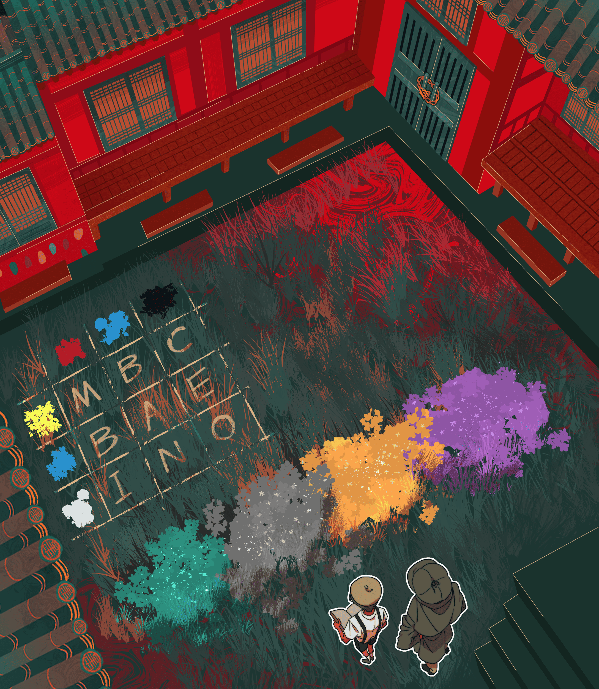
2. 숨겨진 비밀이 가득한 궁집
자물쇠에 정답을 입력하자, 굳게 잠겨있던 자물쇠는 맥없이 풀려나갑니다.
“평범한 부엌이네요. 어, 바닥에 무언가가 있어요!”
“토용이구나. 흙으로 만들어진 인형들이야."
황토빛 부엌의 바닥엔 6개의 흙인형이 둥글게 놓여져 있습니다.
각 인형의 모양새를 보아하니, 조선 시대의 인물들을 모티브로 한 것 같습니다.
인형들의 중앙에는 낡은 쪽지가 놓여져 있습니다.
먼지투성이인 가마솥들은 전부 열려 있지만, 단 하나의 가마솥만이 자물쇠로 굳게 잠겨있습니다.
“숫자 6자리를 입력할 수 있을 것 같아요!"
“흥미롭구나. 이 인형들이 답이 될지도 모르겠다."
탐정과 노마는 쪽지를 유심히 읽어보기 시작했습니다...
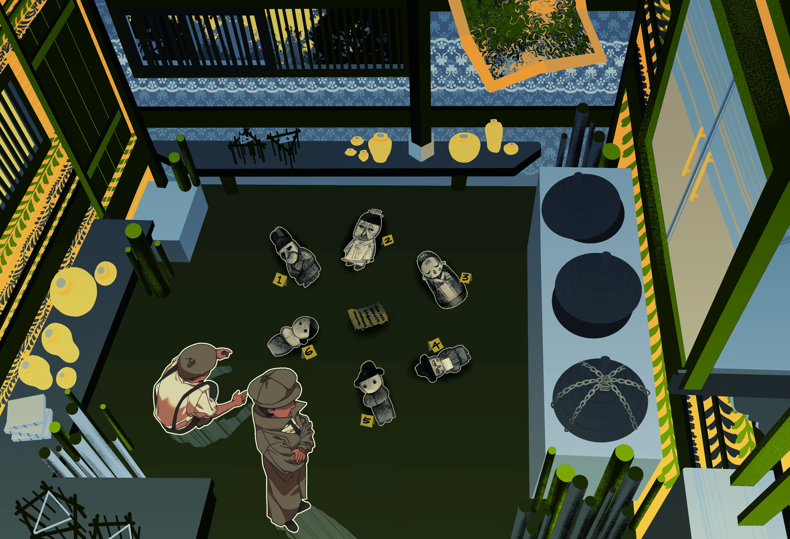
2. 숨겨진 비밀이 가득한 궁집
자물쇠에 알맞은 번호를 입력하자, 솥뚜껑이 웅장한 소음을 내며 열립니다.
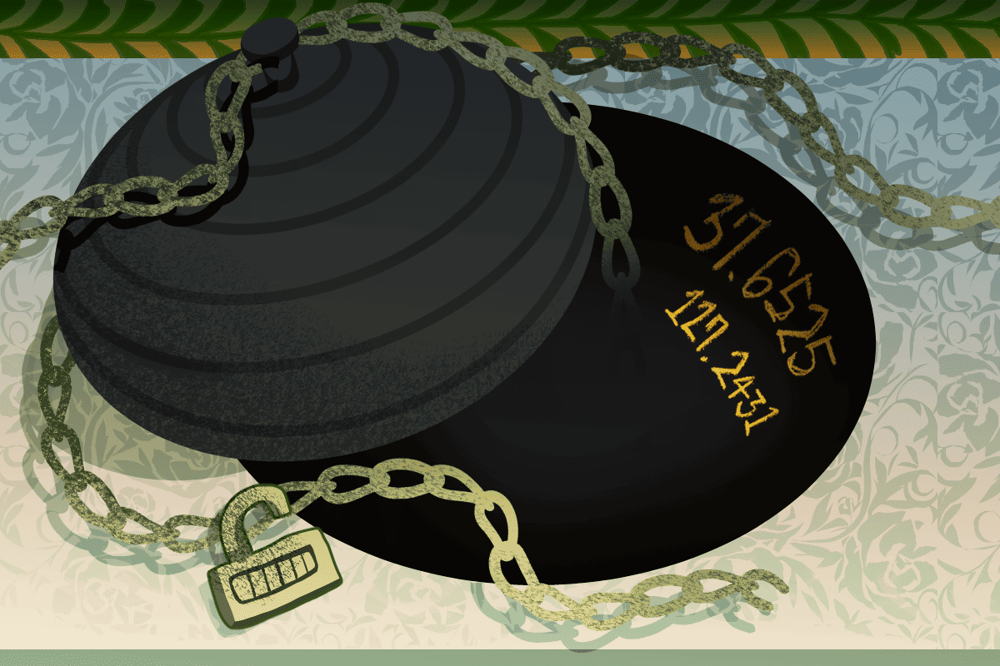
37.6525 127.2431
“말도 안돼, 이 번엔 보물이 있을 줄 알았는데. 또 좌표라니!"
“하하, 너무 낙담해하지 마렴. 원래 보물은 비밀이 많을 수록 더욱 가치있어지는 법이란다."
“알겠어요... 그렇지만 이번이 뭔가 마지막 장소일 것 같다는 직감이 들어요."
둘은 이런 저런 이야기를 하며, 좌표가 나타내는 장소를 향해 출발합니다.
스테이지 2를 클리어하였습니다. 스테이지 3로 이동해주세요!
3. 정말 이 곳이 맞는 걸까?
"무언가 착오가 있었던 것이 분명해요. 이 건물은 다 낡아빠졌는걸요!"
“속단하긴 일러. 분명 쪽지에서 알려준 위치는 이 건물이다.”
천재 사립탐정 곽씨와 그의 조수가 도착한 곳은, 평내호평역 앞의 다 낡아 부서져가는 건물이었습니다. 짓다 만 것인지 한 쪽 벽은 완전히 허물어져 있었고, 녹이 슨 건축 자재들이 쓰레기들과 함께 산을 이루고 있었습니다. 오랫동안 관리받지 않은 듯 주변은 잡초들로 무성합니다.
“그렇지만 들어가는 문조차 보이지 않는걸요..."
탐정과 그의 조수는 폐건물의 주위를 둘러보며 건물의 입구를 찾아보았지만, 아무리 보아도 입구가 보이지 않습니다. 건물 옆에 붙어있던 비상 계단을 내려오며 한숨을 쉬던 그 순간, 탐정의 눈에 한 가지 특이한 것이 들어옵니다.
“노마, 저 벽면에 무언가가 써져있는 것 같지 않니?”
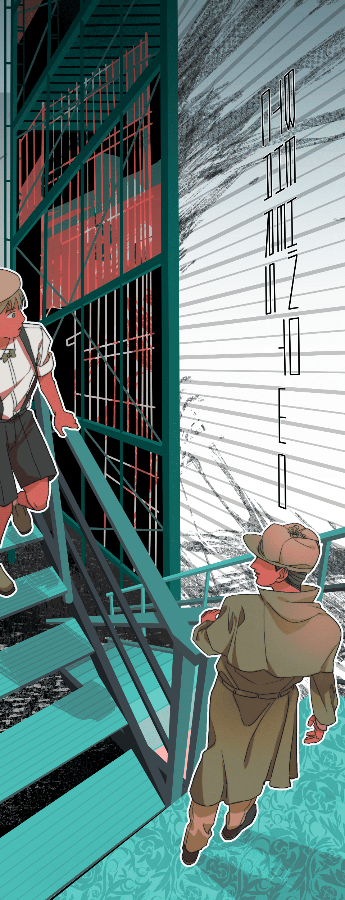
발견한 것을 그대로 입력해주세요!
3. 정말 이 곳이 맞는 걸까?
“Behind the two cars… 두 자동차가 무슨 말인가 했더니, 문이 수풀 속에 숨겨져 있었구나.”
"이 건물은 지어지다 만 것일까요? 계단조차 끊겨있어요."
그들은 조심조심 계단 위를 올라가 입구 주위를 둘러봅니다. 유리문은 역시 굳게 잠겨있었지만, 옆 벽면에 무언가가 그려져 있었습니다.
“이건... 체스인가?"
“그렇다기엔 백색의 룩과 흑색의 킹밖에 없군. 이 알파벳들은 뭐지?"
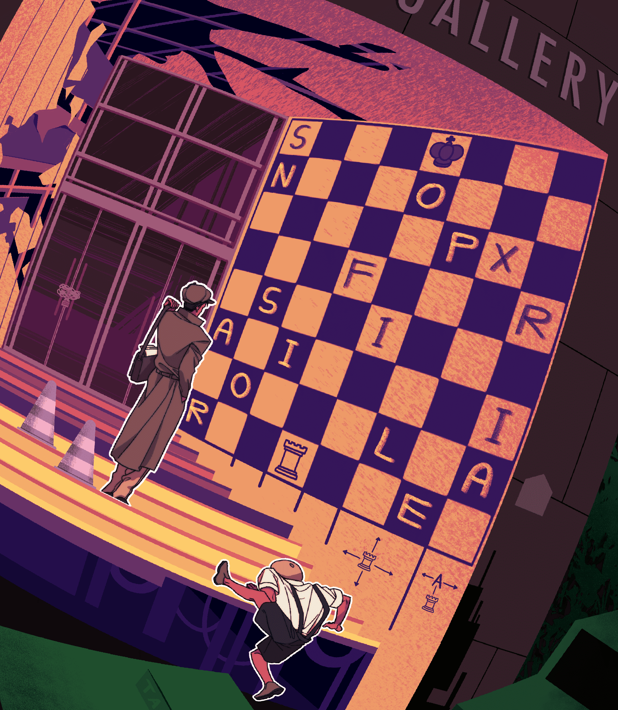
3. 정말 이 곳이 맞는 걸까?
천재 사립탐정 곽씨와 그의 조수 노마는 유리문을 열고 조심조심 폐건물 속으로 들어갔습니다. 다 허물어져 바깥이 훤히 보이는 벽이며, 뻥 뜷린 엉망으로 쌓여 있는 잔해와 쓰레기들까지... 모든 흔적이, 이 건물엔 더 이상 사람이 오고가지 않는다는 것을 일러줍니다.
“으악, 이렇게 낡았을 수가! 이런 곳에 오래 있다간 바닥이 무너지고 말 거예요.”
“호들갑 떠지 말렴. 모든 장소에는 수수께끼가 있는 법이니까. 그나저나 무척 음산한 기분이 드는 곳이군…”
“건축 양식은 그렇게 오래 되어 보이지 않는데, 왜 이렇게 공사도 다 안 하고 흉가가 될 때까지 내버려 뒀을까요?”
“이런 상태의 건물들은 으레 뻔하지. 건물을 짓다가 중간에 계약자 서로간의 이해관계가 맞지 않아 계약이 불발된 거야.”
왠지 모르게 쓸쓸한 기분으로 주위를 둘러보던 노마는 문득 천장에 달린 형형색색의 모빌을 발견합니다.
"탐정님! 저 모빌과 창문 틀의 색, 뭔가 비슷한 것 같아요!
"정말이구나. 무언가 연관이 있는 걸까?"
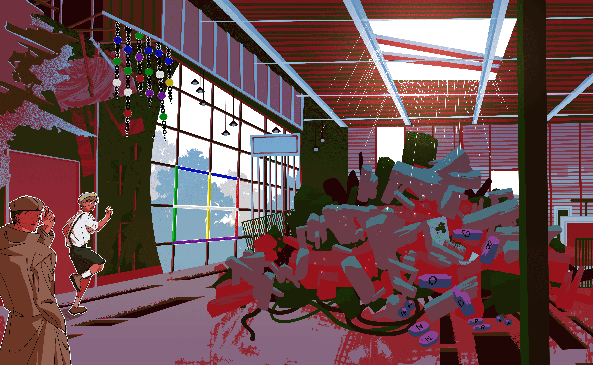
3. 정말 이 곳이 맞는 걸까?
“faucet... 수도꼭지가 있는 곳은 이 곳 뿐이야.”
“설마 수도꼭지를 통째로 이런 곳에 버려놨을 줄 누가 알았겠어요!”
“그러게 말이다. ...... 잠깐, 앞에 소포가 있어. 열어보도록 하자.”
노마는 수도꼭지 앞에 놓여 있는 소포의 노끈을 천천히 풀어냅니다. 그리고 눈 앞에 보인 것은...
폭탄입니다!
3. 정말 이 곳이 맞는 걸까?
“오, 이런. 아무래도 우리가 찾고 있었던 건 유물이 아니었던 모양이야…”
“어, 어떡하죠?! 진짜 폭탄이에요?! 시간이 얼마 남지 않은 것 같은데!”
그들의 눈 앞에, 여러 가지 색깔의 전선들을 가진 시한폭탄이 등장합니다. 째깍이는 소리가 폐건물의 공터 속에서 울려퍼집니다.
“탐정님, 수도꼭지가 달린 기둥에 무언가 그림이 그려져 있어요!”
“하하, 이번이 마지막 수수께끼가 될 지도 모르겠어.”
수도꼭지에 그려진 수상쩍은 저울의 그림과 주변에 알파벳이 써져 있는 사물들... 분명 답은 이 안에 있습니다!
카드를 열고 안의 문제를 풀어 답을 적어주세요!
3. 정말 이 곳이 맞는 걸까?
싹둑!
초록색 선을 잘라내자, 단기간에 째깍거리는 소리가 멎습니다. 동시에 빠르게 내려가던 폭탄의 카운트다운도 멎습니다.
성공입니다! 당신은 평내호평을 지켜냈어요!
3. 정말 이 곳이 맞는 걸까?
돌아가는 길에 노마가 찝찝한 얼굴로 중얼거립니다.
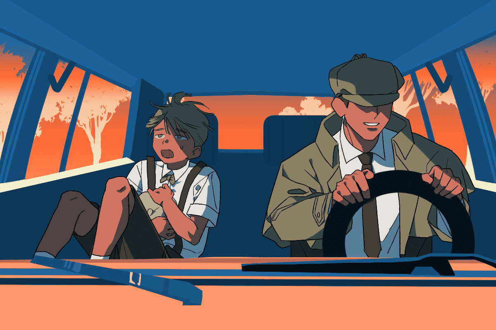
“결국 평내호평에 보물이 숨겨져있었다는 말은 헛소문이었을까요?”
“글쎄다… 보물이라는 게 꼭 금은보화를 말하는 건 아닐지도 모르지.”
사립탐정 곽씨는 그렇게 말하며 창 밖으로 한참 동안 평내호평의 여러 건물들을 바라봤습니다. 방금까지 둘러본 과거의 흔적들은 온데간데없이, 동네는 사람들이 살아가는 활기찬 기운으로 들썩이고 있습니다.
“이 마을을 지키고, 사람들을 더이상 과거가 아닌 미래로 내딛을 수 있는 가능성을 열어주는 것. 어쩌면 그게 진짜 보물일지도 몰라.”
탐정의 입가에 미묘한 미소가 떠올랐습니다. 그의 말에 조수는 잠시 침묵하더니 이내 서서히 고개를 끄덕였습니다.
“보물은 우리가 찾은 게 아니라 우리가 남긴 것이었군요.”
그렇게 두 사람은 아무 말 없이 차를 몰고 평내호평과 멀어져갔습니다. 또 우연히 이곳에 다다른다면, 그들이 본 과거의 흔적들이 약간이나마 남아있기를 바라면서...